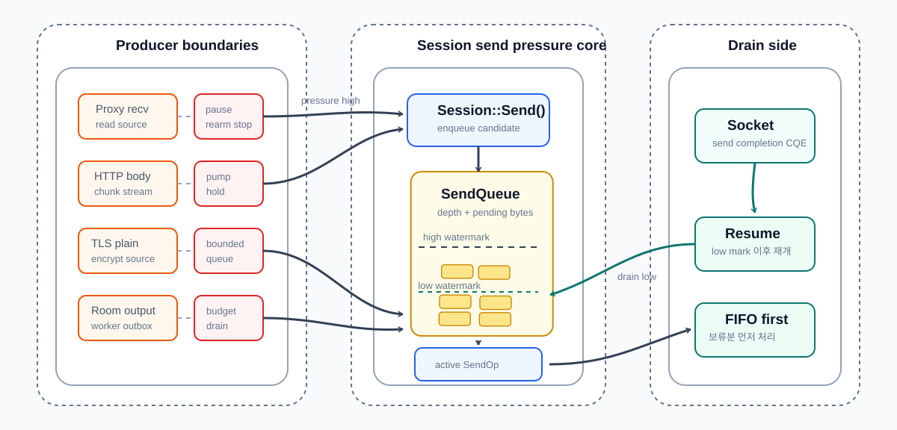
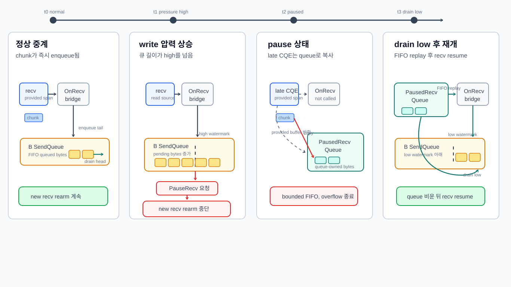
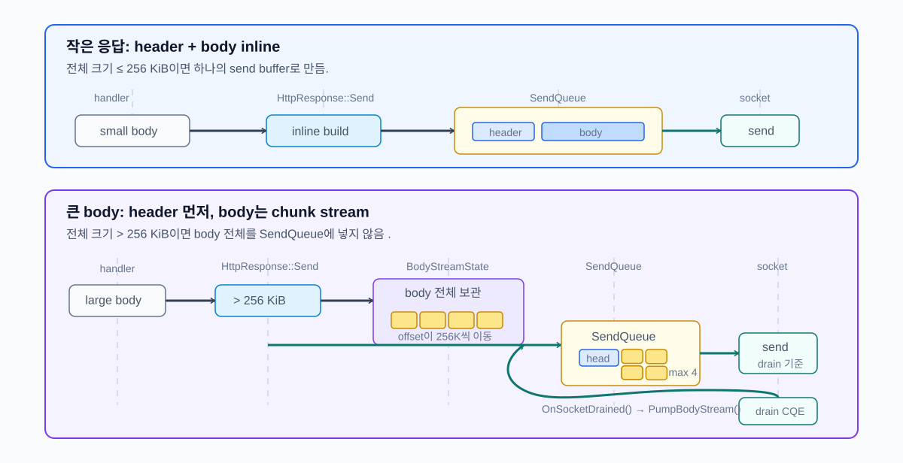

SendQueue를 메모리 압력 측정 단위로
애플리케이션 단위의 레이어에서 HTTP handler, proxy upstream, TLS 암복호화 단계, Room worker처럼 데이터를 만드는 생산자는 계속 다음 출력을 만들 수 있습니다. 반면 실제 소비자는 소켓 송신 완료 CQE를 받아 SendQueue를 비우는 쪽입니다. 생산 속도가 소비 속도보다 빨라지면 한쪽이 넘치게 됩니다.
| 경계 | 생산자 | 압력이 쌓이는 위치 | 조절 방식 |
|---|---|---|---|
| Runtime send | 애플리케이션 Send() |
SendQueue, SendOp |
pending 개수와 byte를 관측하고 한도 초과 시 종료 |
| Proxy bridge | 한쪽 peer의 recv | 반대편 peer의 write | write 압력을 read pause/resume으로 전파 |
| Proxy TLS | plaintext 생성 단계 | 암호화 전 plaintext queue | bounded queue에 보류하고 socket drain 이후 재개 |
| HTTP response | handler, file/body stream | response body chunk | header와 body stream을 분리해 drain 속도만큼 pump |
| Paused recv | 이미 완료된 recv CQE | pause 중 임시 recv queue | FIFO로 보존하되 한도 초과 시 종료 |
| Room output | Room worker | worker outbox, session queue | 세션별 FIFO와 budgeted drain으로 송신 경로 진입 |

1 SendQueue를 메모리 압력 측정 단위로
초기 송신 큐 방어는 주로 몇 개의 버퍼가 쌓였는지를 기준으로 삼았습니다. 하지만 큐 항목 수만으로는 실제 메모리 압력을 알 수 없습니다. 같은 10개라도 작은 패킷 10개와 256 KiB body chunk 10개는 다른 상황이었습니다.
그래서 SendQueue 는 depth와 byte를 함께 관측합니다.
| 값 | 의미 |
|---|---|
current_depth |
현재 대기 중인 buffer 개수 |
pending_bytes |
현재 대기 중인 총 byte 수 |
peak_depth |
관측된 최대 queue depth |
peak_pending_bytes |
관측된 최대 pending bytes |
overflow_count |
한도 초과 횟수 |
max_pending 같은 hard limit은 마지막 방어선입니다. 한도를 넘은 연결은 더 이상 큐잉하지 않고 정리합니다.
2 write backpressure를 read 쪽으로 되돌리기
프록시는 한쪽 peer에서 받은 데이터를 반대편 peer로 전달합니다. 이때 downstream은 빠르게 읽히는데 upstream write가 느리면, 단순 중계 구조에서는 downstream recv가 계속 새로운 데이터를 만들고 반대편 send queue만 커집니다.
그래서 proxy bridge는 write-side backpressure를 read-side pause로 전파합니다.

이 그림은 백프레셔의 시간 흐름과 pause 중 recv 데이터의 보존 경계를 함께 보여줍니다. B 쪽 SendQueue가 high watermark를 넘으면 A 쪽 새 recv 등록을 멈추고, 이미 완료되어 들어온 recv CQE의 데이터는 PausedRecvQueue로 복사합니다. B 쪽 write가 low watermark 아래로 내려가면 보류된 데이터를 FIFO 순서로 먼저 OnRecv()에 다시 전달한 뒤 recv 등록을 재개합니다.
여기서 RecvBuffer와 PausedRecvQueue는 다른 책임을 가집니다. RecvBuffer는 프로토콜 프레임이 조각났을 때 패킷을 조립하기 위한 세션 내부 버퍼이고, PausedRecvQueue는 백프레셔 때문에 OnRecv() 전달을 늦추는 queue-owned bounded FIFO입니다.
| 상황 | 처리 |
|---|---|
| 반대편 write가 정상적으로 drain됨 | recv를 계속 등록하고 즉시 중계 |
| 반대편 send queue가 pressure 상태 | 현재 peer의 recv를 pause |
| socket drain 신호 도착 | 보류 데이터를 먼저 비우고 recv resume |
| 보류 queue 한도 초과 | peer 쌍을 정리 |
3 Paused recv queue: pause 이후 이미 도착한 데이터 보존
read를 pause한다고 해서 이미 완료된 recv CQE까지 사라지는 것은 아닙니다. PauseRecv()를 호출했더라도 커널이나 ring에서 이미 넘어온 데이터가 있을 수 있습니다.
이 데이터를 버리면 TCP 바이트 스트림이 깨집니다. 반대로 무제한으로 보관하면 pause 자체가 백프레셔 역할을 하지 못합니다. 그래서 pause 중 도착한 데이터는 PausedRecvQueue에 제한적으로 보존합니다.
| 상황 | 처리 |
|---|---|
| recv가 pause되지 않음 | 즉시 OnRecv()로 전달 |
| recv가 pause됨 | 도착한 chunk를 paused recv queue에 복사 |
| queue 한도 내 | resume 때 FIFO로 다시 OnRecv() |
| queue 한도 초과 | overflow로 disconnect |
이 경계의 목적은 성능 최적화가 아니라 스트림 보존입니다. write-side 압력이 read-side pause로 전파되더라도, 이미 도착한 바이트는 순서를 유지한 채 제한된 범위에서만 살아남습니다.
4 큰 응답을 drain 속도에 맞춰 생산
HTTP handler는 큰 JSON, 큰 text, 파일 body를 만들 수 있습니다. 이 body를 한 번에 SendBuffer로 만들면 두 문제가 생깁니다.
| 문제 | 이유 |
|---|---|
| build 실패 | body가 buffer pool chunk보다 클 수 있음 |
| slow client 앞 메모리 증가 | 큰 응답 전체가 send queue에 한 번에 들어감 |
| 기준 | 값 |
|---|---|
| inline response 한계 | 256 KiB |
| body stream chunk 크기 | 256 KiB |
| 한 번에 pump하는 최대 chunk 수 | 4 |

HttpResponse::Send()는 전체 크기가 inline 한계 이하일 때만 단일 buffer를 만듭니다. 더 큰 응답은 header를 먼저 보내고 StartBodyStream()으로 body를 넘깁니다.
작은 응답은 header와 body를 하나의 send buffer로 만들어 바로 Send()할 수 있지만, 큰 응답을 한 번에 만들면 느린 클라이언트 앞에서 send queue와 buffer pool에 큰 압력이 생깁니다. 그래서 큰 body는 먼저 header만 전송하고, body는 BodyStreamState에 보관한 뒤 일정 크기의 chunk로 나누어 pump합니다.
동작 흐름은 다음과 같습니다.
- 이미 file stream이나 body stream이 진행 중이면 시작하지 않습니다.
- body shared pointer, offset, chunk size, 한 번에 보낼 최대 chunk 수를
body_stream_에 저장합니다. - 먼저 HTTP header buffer를
Send()합니다. - header 전송 등록에 성공하면
PumpBodyStream()을 호출해 첫 body chunk 묶음을 큐에 넣습니다. - 이후 socket send가 drain될 때
OnSocketDrained()에서 다시PumpBodyStream()을 호출해 다음 chunk를 이어 보냅니다.
이 구조로 큰 body 전체를 한 번에 SendQueue에 넣지 않고, chunk_size * max_chunks_per_write 단위로만 생산합니다. 즉 생산자인 HTTP response body stream이 소비자인 socket send 완료 속도에 맞춰 천천히 진행됩니다.